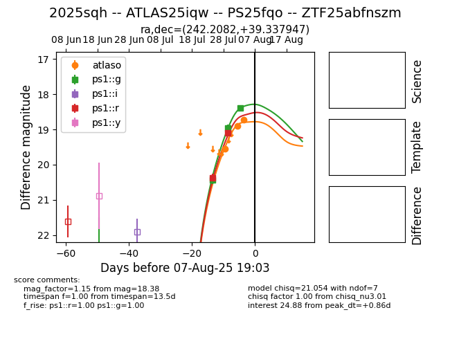

Target 2025sqh at 2025-08-22 16:26, see:
FINK: fink-portal.org/ZTF25abfnszm
Lasair: lasair-ztf.lsst.ac.uk/objects/ZTF25abfnszm
ALeRCE: alerce.online/object/ZTF25abfnszm
TNS: wis-tns.org/object/2025sqh
YSE: ziggy.ucolick.org/yse/transient_detail/2025sqh
alt names
ZTF25abfnszm (ztf,alerce)
2025sqh (tns,yse)
ATLAS25iqw (atlas)
PS25fqo (panstarrs)
coordinates:
equatorial (ra, dec) = (242.2082,+39.33799)
galactic (l, b) = (62.6110,+47.51575)
photometry
last atlaso=18.79, ps1::g=18.59, ps1::i=18.80, ps1::r=18.63, ps1::y=19.18, ztfg=18.54, ztfr=18.63
8 atlaso, 4 ps1::g, 1 ps1::i, 4 ps1::r, 1 ps1::y, 1 ztfg, 1 ztfr detections
